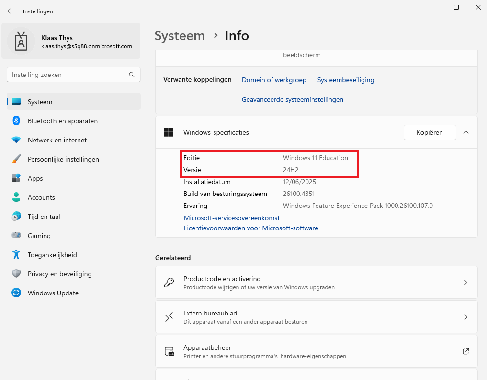
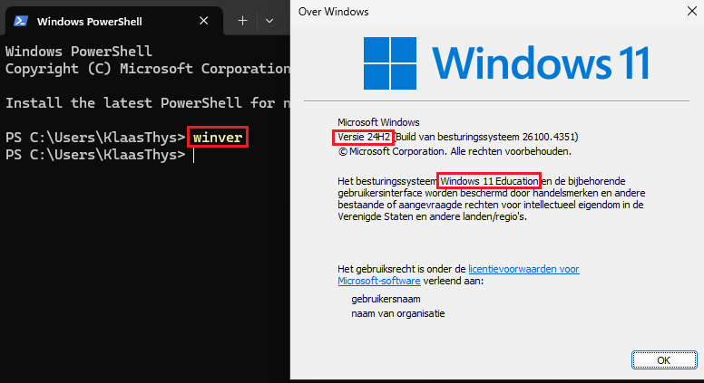
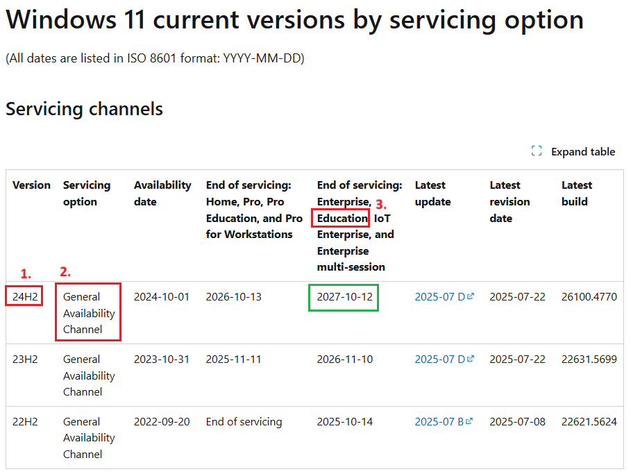
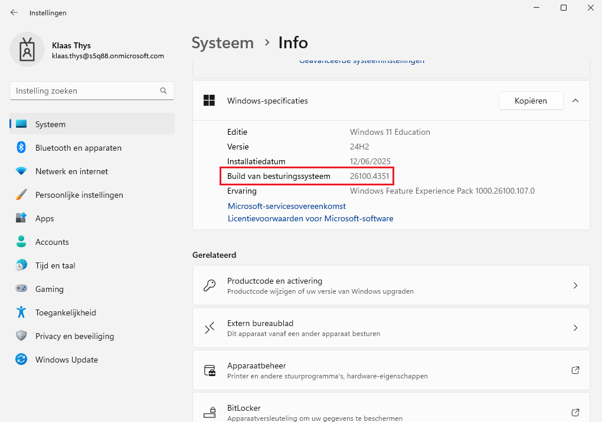
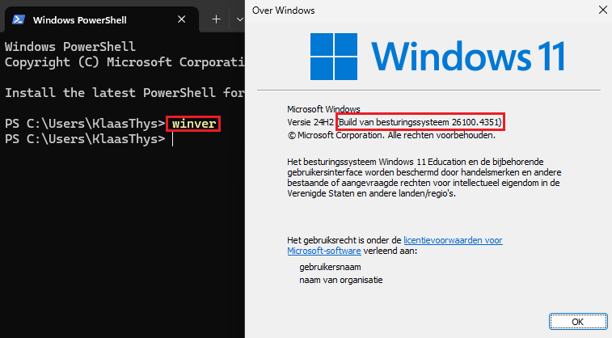
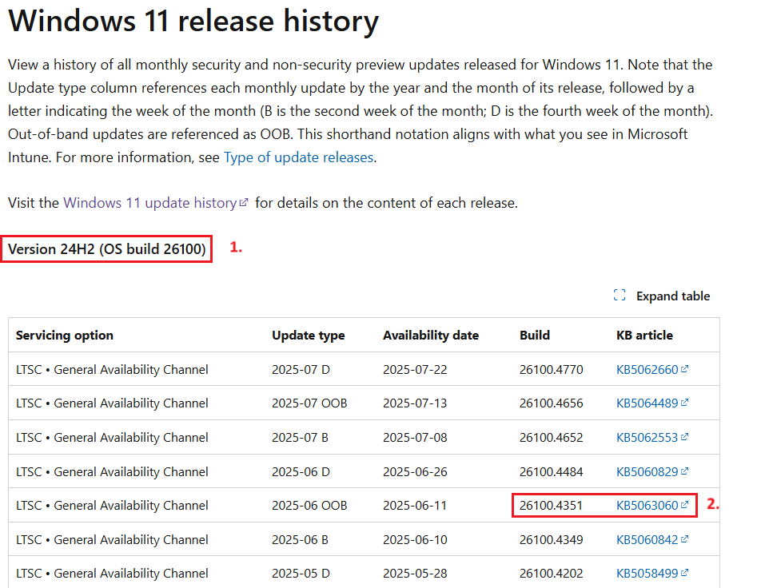

Support
Als Windows-systeembeheerder is het cruciaal dat je kan:
- De einddatum van de ondersteuning van een Windows-systeem bepalen.
- Windows-release, -versie en -updates afleiden uit het build number.
- Aan de hand van het build number bepalen welke updates op Windows zijn toegepast.
- Opzoeken wanneer een Windows-versie is uitgebracht.
1. End of Servicing-datum
De End of Servicing-datum van een Windows-systeem hangt af van:
- De Windows-versie
- De Windows-editie
- Het release channel
1.1. Versie en editie opzoeken
Methode 1: Windows Settings
Je vindt de versie en editie van een Windows-systeem in de Windows Settings.
- Navigeer in de Windows Settings naar "System" > "About".
- Scroll naar beneden naar de sectie "Windows specifications".

Methode 2: Windows Terminal
Je vindt de Windows-versie van een systeem door het volgende commando uit te voeren in een Windows Terminal:
winver

1.2. Release channel
Op het moment van schrijven zijn er drie release channels.
- GAC - General Availability Channel: dit is het standaard releasekanaal.
- LTSC - Long Term Servicing Channel: ontworpen voor embedded toestellen, IoT-toestellen, geldautomaten, enz. Het laat toe om feature-updates uit te stellen. Deze release biedt langere ondersteuning voor toestellen in dit kanaal. Het LTSC-releasekanaal is enkel beschikbaar voor de Enterprise-editie.
- Windows Insider Program: een releasekanaal om de nieuwste functies te testen en feedback te geven.
Het is niet mogelijk om het release channel te wijzigen van LTSC naar GAC of omgekeerd. Het release channel wordt bepaald door de ISO van je installatie.
1.3. End of Life opzoeken
Nadat je de Windows-versie en -editie hebt bepaald, gebruik je de volgende website om de End of Servicing-datum op te zoeken.
Voor Windows 11 24H2 - Education - GAC release channel is de "End of servicing date": 12/10/2027

2. Build number
Wanneer je Windows-systeem centraal beheerd wordt via Microsoft Intune, kan je bepaalde gegevens niet rechtstreeks van het systeem aflezen. Windows build numbers volgen echter een standaardformaat waaruit je verschillende gegevens kan afleiden:
- Bepalen welke Windows-release is geïnstalleerd (zoals Windows 10 of Windows 11).
- De specifieke geïnstalleerde Windows-versie achterhalen (bijv. 23H2, 24H2).
- Bepalen welke Windows-updates zijn toegepast.
2.1. Build number opzoeken
Het build number kan je opzoeken via de Windows Settings of door het commando winver uit te voeren.
Methode 1: Windows Settings
Je vindt het build number van een Windows-systeem in de Windows Settings.
- Navigeer in de Windows Settings naar "System" > "About".
- Scroll naar beneden naar de sectie "Windows specifications".

Methode 2: Windows Terminal
Je vindt het Windows build number van een systeem door het volgende commando uit te voeren in een Windows Terminal:
winver

2.2. Informatie afleiden uit het Windows build number
Een Windows build number is een unieke identificatie die aan elke versie van het Windows-besturingssysteem wordt toegekend. Het Windows build number bestaat uit twee delen:
- Eerste deel: het versienummer, dat de hoofdversie van het besturingssysteem aangeeft. Bijvoorbeeld 1903, 23H2 of 24H2.
- Tweede deel: wordt bepaald door de laatste specifieke update die werd toegepast. Elke Windows-update krijgt een KB-nummer. Een KB-nummer (Knowledge Base) verwijst naar de unieke identificatiecode van een specifieke Windows-update.
Neem bijvoorbeeld het volgende build number.
26100.4351
Open de website Windows 11 release information en scroll naar beneden naar de kop "Windows 11 Release Information".

1. Windows-release en -versie
Als we het eerste deel van het build number, 26100, opzoeken op de website Windows 11 Release Information, kunnen we besluiten dat:
- De Windows-release is: Windows 11
- De Windows-versie is: 24H2
2. Windows-update
Als we het tweede deel van het build number, 4351, opzoeken op de website Windows 11 Release Information, kunnen we besluiten dat:
- De laatste Windows-update KB5063060 is
Gedetailleerde informatie over de Windows-updates vind je op deze website: Windows 11, version 24H2 update history